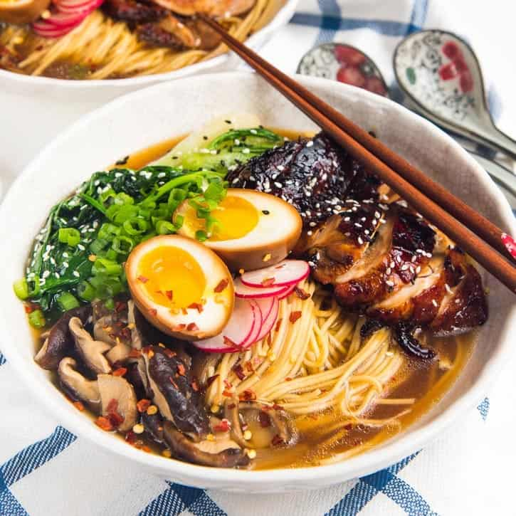

Japanese Ramen Noodles

What are Japanese Ramen Noodles?
In present day, ramen noodles are one of the most beloved dishes in Japan. Essentially, the dish is a bowl of noodle soup with a variety of toppings that make the bowl much more flavorful.
Ingredients
- 1 serving of ramen noodles with choice of soup
- narutomaki fishcake
- shiitake mushrooms
- nori seaweed
- wakame seaweed
- bamboo shoots
- soy sauce simmered boiled egg
- spring onions
- sliced meat (chicken, beef, pork)
- sweetcorn
How To Prepare Japanese Ramen Noodles
- First begin by preparing your chosen toppings. You can fry the shiitake mushrooms and bamboo shoots with a little soy sauce to give them a richer flavour. Although naruto fishcakes don’t have much flavour on their own, the pink spiral definitely adds a touch of colour to your ramen noodle soup so slice up a few pieces of it. You can also choose to include lots of spring onion and nori seaweed to make a 100% vegan ramen called negi ramen.
- You may wonder which is the best flavour for your ramen soup, soy sauce or miso. Soy sauce broth has a light and salty flavour and miso broth is a rich flavoured choice that originates from Hokkaido. Miso soup tends to be a bit thicker with a strong, salty taste.
- The preparation of your ramen is very easy, simply boil water in a large saucepan, then add the noodles and let them cook for 2 to 3 minutes.
- While your ramen are cooking, dilute the sauce with hot water in a bowl. The amount of water you use is up to you depending on how strong you want your soup to taste. Start by adding approximately 250ml of water to the soup base and add a little water until you get just the right taste for you.
- Lastly, add your noodles and soup to a bowl, then your prepared toppings. Like many types of Japanese cuisine, presentation is key to a perfect bowl of ramen. As Japanese people say, a lot of the feelings of hunger come from your eyes, not your stomach.
Go to Top of Page
Back to Homepage